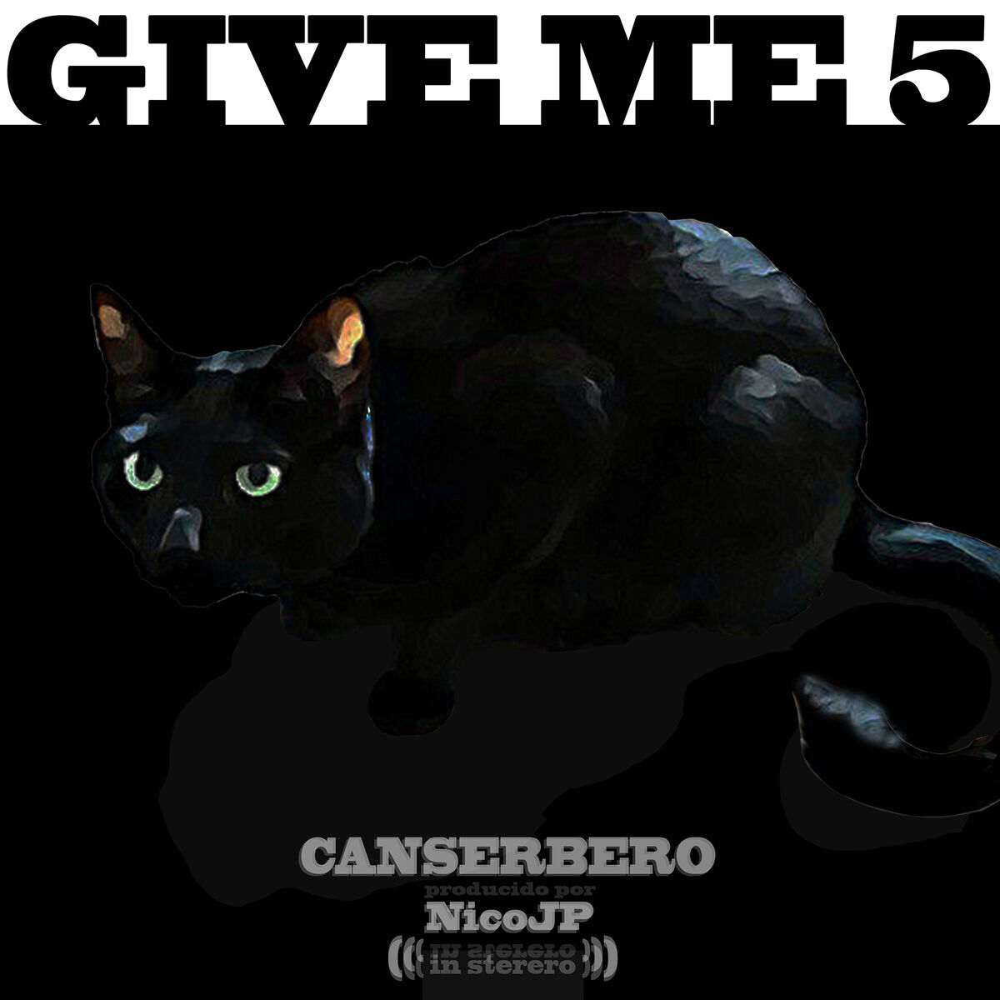

<html>
<head>
<titlte>Información personal</title>
</head>
<body background="fondo.jpg">
<pre>
<center> <font face="Book Antiqua" size=4.56 color="white"> Hablemos sobre la música de Canserbero. Este rapero venezolano, cuyo nombre real es
  Tyrone González, es conocido por su lírica profunda y reflexiva, así como por su estilo único que fusiona el rap con elementos del rock y el reggae.
  Su música a menudo aborda temas como la vida, la muerte, la injusticia social, la política y las luchas personales.</font></center>

  <center<center> <font face="Book Antiqua" size=4.56 color="white"> ALGUNOS ALBUMES DE CANSERBERO MAS FAMOSOS SON:</font></center>


<center><font face="Book Antiqua" size=4.56 color="white "> Älbum " MUERTE "</font></center>
 <center><a href="https://www.youtube.com/watch?v=sq6oc066w14&list=PLD7CF0BAAA0B7D594&index=2"> </img></center>
  
  <center> <font face="Book Antiqua" size=4.56 color="white">"Muerte" es el segundo álbum de estudio del rapero venezolano Canserbero, lanzado en 2012. Este álbum es una obra fundamental en su carrera y aborda temas
  profundos y oscuros, centrados en la muerte, la violencia, la injusticia, y la introspección personal. A diferencia de su álbum anterior, "Vida" (2010), que
  explora temas más positivos y esperanzadores, "Muerte" se sumerge en las sombras del alma humana y la realidad social.</font></center>

<font face="Book Antiqua" size=5 color="white "><b>Temas y contenido del álbum:</b></font>
<font face="Bell MT" size=4.5 color="white ">
  Lucha interna y existencialismo: El álbum está cargado de reflexiones sobre la muerte y la mortalidad. Canserbero explora el miedo a la muerte, la inevitabilidad del final, y la lucha interna entre el bien y
  el mal. Canciones como "Es Épico" y "Maquiavélico" reflejan esta batalla personal.

  Crítica social: Muchas canciones del álbum son una crítica directa a la violencia en la sociedad, la corrupción, y la injusticia. Canserbero se expresa con crudeza y sin tapujos sobre la situación de su país
  y el mundo en general.

  Narrativa y cuentos: El álbum también incluye canciones narrativas que cuentan historias de violencia y muerte, como "C'est la Mort", donde aborda las consecuencias de la venganza y la pérdida.</font>


<font face="Book Antiqua" size=5 color="white "><b>¿Por qué lo escribió?:</b></font>
<font face="Bell MT" size=4.5 color="white ">Canserbero, cuyo nombre real era Tyrone González, tenía una visión muy clara sobre el mundo y la sociedad que lo rodeaba. La razón detrás de "Muerte" está vinculada a su
  experiencia personal y su percepción de la realidad. Se sabe que Canserbero fue un artista profundamente sensible y consciente de las problemáticas sociales de su entorno.
  La violencia y la muerte eran temas cercanos a su vida, especialmente en el contexto de la situación en Venezuela.</font>

  
  <font face="Book Antiqua" size=4.5 color="white ">Además, la dualidad entre sus álbumes "Vida" y "Muerte" refleja su deseo de mostrar ambas caras de la existencia humana: la alegría y el dolor, la esperanza y la 
  desesperación, la vida y la muerte. "Muerte" es la culminación de esta exploración, una especie de catarsis personal donde el artista canaliza su frustración, su rabia, y 
  su tristeza a través de la música.</font>

<font face="Book Antiqua" size=5 color="white "><b>Impacto y legado:</b></font>
 <font face="Bell MT" size=4.5 color="white ">"Muerte" se ha convertido en un álbum de culto dentro del rap en español, admirado por su lirismo profundo y su capacidad para conectar con el oyente a un nivel emocional 
  intenso. Canserbero logró con este álbum consolidarse como uno de los artistas más influyentes del rap latinoamericano, dejando un legado que sigue vivo a pesar de su trágica muerte en 2015.</font>


<center><font face="Book Antiqua" size=4.56 color="white "> Älbum " VIDA "</font></center>
 <center> <a href="https://www.youtube.com/watch?v=dwucZ5Kpuww&list=PLgaFNC_I_ZklwX69aVibC_qewk9ySTTDS&index=10"></img></center>


<center> <font face="Book Antiqua" size=4.56 color="white">"Vida" es el primer álbum de estudio del rapero venezolano Canserbero, lanzado en 2010. Este álbum es considerado una obra maestra en el rap en español debido a 
  su profundo contenido lírico y su capacidad para conectar con las emociones y experiencias de la audiencia. En contraste con su siguiente álbum, "Muerte", que aborda temas oscuros y profundos, "Vida" se enfoca en
  aspectos más luminosos de la existencia, como el amor, la esperanza, la lucha personal, y la superación.</font></center>

<font face="Book Antiqua" size=5 color="white "><b>Temas y contenido del álbum:</b></font>
<font face="Bell MT" size=4.5 color="white ">
  Reflexiones sobre la vida:
  A lo largo del álbum, Canserbero reflexiona sobre la vida, el propósito de la existencia, y las experiencias que nos forman como personas. Canciones 
  como "Es épico" y "Pensando en ti" expresan esta visión positiva y profunda sobre la vida.

  Amor y relaciones: 
  En canciones como "C’est la vie", Canserbero aborda el amor y las relaciones de una manera sincera y honesta, explorando tanto los aspectos positivos como los desafíos que enfrentamos en nuestras conexiones 
  con los demás.

  Conciencia social y crítica: 
  Aunque "Vida" es más optimista en tono, Canserbero no se aleja de su papel de crítico social. Canciones como "Mundo de piedra" analizan la dureza de la vida y las injusticias que enfrenta la sociedad, manteniendo 
  un equilibrio entre el reconocimiento de los problemas y la esperanza de un futuro mejor.

  Superación personal:
  Muchas de las letras del álbum invitan al oyente a reflexionar sobre sus propias luchas y cómo superarlas. Canserbero ofrece mensajes de resiliencia y crecimiento, subrayando la importancia de seguir adelante 
  a pesar de las dificultades.
</font>
<font face="Book Antiqua" size=5 color="white "><b>¿Por qué lo escribió?:</b></font>
<font face="Bell MT" size=4.5 color="white ">Canserbero creó "Vida" como una expresión de su visión del mundo y su experiencia personal. El álbum refleja un equilibrio entre lo positivo y lo negativo, pero desde 
  un enfoque que resalta la belleza y el valor de la vida. Este proyecto nace de su deseo de conectar con su audiencia a un nivel emocional profundo y ofrecerles una guía a través de sus propias experiencias y
  observaciones sobre la vida.</font>

 <font face="Bell MT" size=4.5 color="white ">"Vida" también se presenta como una contraposición a su posterior álbum "Muerte". Ambos trabajos están interrelacionados y se complementan, mostrando los dos lados
   de la existencia humana: la luz y la oscuridad, la vida y la muerte. </font>

<font face="Book Antiqua" size=5 color="white "><b>Impacto y legado:</b></font>
<font face="Bell MT" size=4.5 color="white ">"Vida" consolidó a Canserbero como uno de los referentes más importantes del rap en español. Su enfoque lírico, cargado de introspección y crítica social, resonó
  profundamente con sus seguidores, quienes valoraron su autenticidad y su capacidad para hablar sobre temas universales de una manera accesible y poderosa. El álbum sigue siendo influyente en la escena del 
  rap latinoamericano y es considerado una pieza fundamental para entender la obra de Canserbero. A través de "Vida", Tyrone González logró trascender las barreras del género, llegando a un público diverso que 
  valora la honestidad y la profundidad de su música. </font>


<center><font face="Book Antiqua" size=4.56 color="white "> Älbum "give me 5 "</font></center>
 <center><a https://www.youtube.com/watch?v=e-5JAgSiko4&list=PL0YEPAzWUDJmG2mpN1GDmEIeOCcgdHYQ0&index=2"> </img></center>


<center> <font face="Book Antiqua" size=4.56 color="white"> "Give Me 5" es un álbum colaborativo lanzado en 2010 que reúne a varios artistas del rap venezolano, incluyendo a Canserbero. Este proyecto forma parte
  de una serie que busca destacar el talento de la escena del hip-hop en Venezuela, mostrando la diversidad de estilos y voces que la componen. Aunque Canserbero es una de las figuras más prominentes en el álbum, es
  importante señalar que este trabajo es el resultado de una colaboración entre diferentes artistas. </font></center>

<font face="Book Antiqua" size=5 color="white "><b>Temas y contenido del álbum:</b></font>
<font face="Bell MT" size=4.5 color="white ">
 Colaboración y unidad: "Give Me 5" es un proyecto que enfatiza la importancia de la colaboración dentro de la comunidad del rap venezolano. A través de las distintas canciones, se puede sentir la energía colectiva de
  los artistas que participan, cada uno aportando su estilo único y sus perspectivas.

Crítica social y realidad urbana: A pesar de ser un álbum colaborativo, las letras mantienen una fuerte conexión con la realidad social de Venezuela. Los temas van desde la vida en las calles, la lucha contra la
  injusticia, y las dificultades de crecer en un entorno hostil.

Diversidad musical: Al contar con la participación de varios artistas, "Give Me 5" presenta una diversidad de ritmos y enfoques dentro del género del rap. Aunque hay un hilo conductor en términos de temática, cada 
  canción tiene un toque distinto, gracias a las contribuciones de los diferentes colaboradores.

La presencia de Canserbero: Aunque no es un álbum en solitario, Canserbero se destaca por su habilidad para fusionar sus ideas con las de otros artistas. Su estilo característico, lleno de profundidad y reflexión, se 
  deja sentir en las canciones en las que participa, y su voz es una de las más memorables en el proyecto. 
</font>

  <font face="Book Antiqua" size=5 color="white "><b>¿Por qué lo escribió?:</b></font>
  <font face="Bell MT" size=4.5 color="white "> Give Me 5" fue creado como un esfuerzo conjunto para fortalecer la escena del rap en Venezuela y mostrar al mundo el talento local. Para Canserbero, este tipo de proyectos 
    también eran una oportunidad de conectarse con otros artistas, compartir ideas, y expandir su propio alcance. Este álbum refleja su deseo de ser parte de un movimiento más amplio dentro del hip-hop venezolano, más allá 
    de sus trabajos en solitario. </font>
<font face="Book Antiqua" size=5 color="white "><b>Impacto y legado:</b></font>
  <font face="Bell MT" size=4.5 color="white "> Aunque "Give Me 5" no tiene el mismo nivel de reconocimiento que los álbumes en solitario de Canserbero, sigue siendo una pieza importante dentro de su discografía y dentro de
    la historia del rap venezolano. Este proyecto ayudó a consolidar la reputación de Canserbero como un artista versátil, capaz de colaborar efectivamente con otros mientras mantiene su voz única. Además, "Give Me 5" es un 
    testimonio del poder de la colaboración y de cómo la unión de talentos puede crear algo significativo y duradero en la música.
  </font>

<font face="Book Antiqua" size=5 color="white ">
  Los álbumes de Canserbero son considerados hermosos por su profundidad lírica y emocional. Sus letras abordan temas universales como la vida, la muerte, y la injusticia social con una autenticidad conmovedora. La honestidad 
  de su mensaje y la habilidad para conectar con las experiencias humanas hacen que cada álbum sea una obra introspectiva y poderosa. La fusión de crítica social, reflexión personal y la riqueza poética en su música otorgan a
  sus discos un impacto duradero y significativo.
</font>
<a href="CANSERBERO_OFICIAL.html"></img>
</a>
